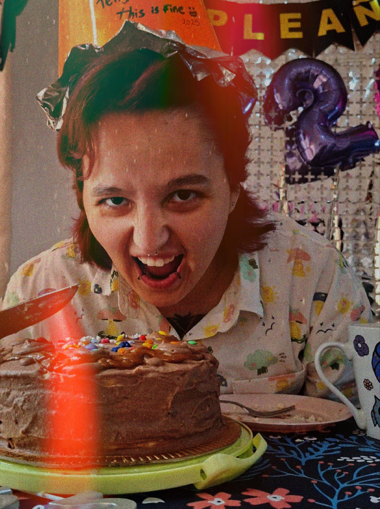

Bruno Ochoa
Estudiante de Diseño y Comunicación Visual
Sobre mi
Estudiante de cuarto año de la licenciatura en Diseño y Comunicación Visual en la Universidad Nacional de Lanús. Me interesa mucho la tipografía, sobre todo su proceso de diseño y siempre busco maneras de incorporar nuevo conocimiento.

Estudios
- Licenciatura en Diseño y Comunicación Visual
- Univerisdad Nacional de Lanús | En curso
Habilidades
- Adobe Creative Cloud: Illustrator, Photoshop, InDesign
- Otros: Canva, conocimientos básicos de HTML/CSS
- Diseño editorial
- Diseño tipográfico
- Identidad visual / Branding
Experiencia
- Diseñador Creativo Freelance
- Proyectos independientes(Enero 2023 – Actualidad)
- Diseño y optimización de piezas gráficas para redes sociales (Instagram/Facebook) para pequeños comercios y emprendimientos, mejorando su consistencia visual.
- Creación de material promocional apto para imprenta (folletos, flyers, packaging y cartelería), realizando el armado de originales y control de archivos en varios formatos.
- Asesoramiento directo a clientes independientes para traducir sus necesidades comerciales en soluciones estéticas y funcionales.
- Nimara Artesanal
- Gestión Comercial y Comunicación Visual (Dic 2025 - Actualidad)
- Gestión integral del emprendimiento, control de calidad visual y atención personalizada
- Gestión y curaduría del contenido estético para redes sociales y mensajería.
- Coordinación de logística, organización de stock y optimización del flujo de entregas a clientes.
- Estudio Girasol
- Gestión Comercial y Comunicación Visual (Feb 2021 – Ene 2022)
- Gestión integral del emprendimiento, participando activamente en la cadena de producción, control de calidad visual y atención personalizada
- Gestión y curaduría del contenido estético para redes sociales y mensajería, asegurando una comunicación clara y alineada a la identidad de la marca.
- Transporte Rincón
- Venta y Asesoramiento (Mar 2021 – Dic 2021)
- Atención directa al público, asesoramiento al cliente y resolución de consultas operativas.
- Manejo de sistemas de gestión digital, control de disponibilidad y administración de caja.